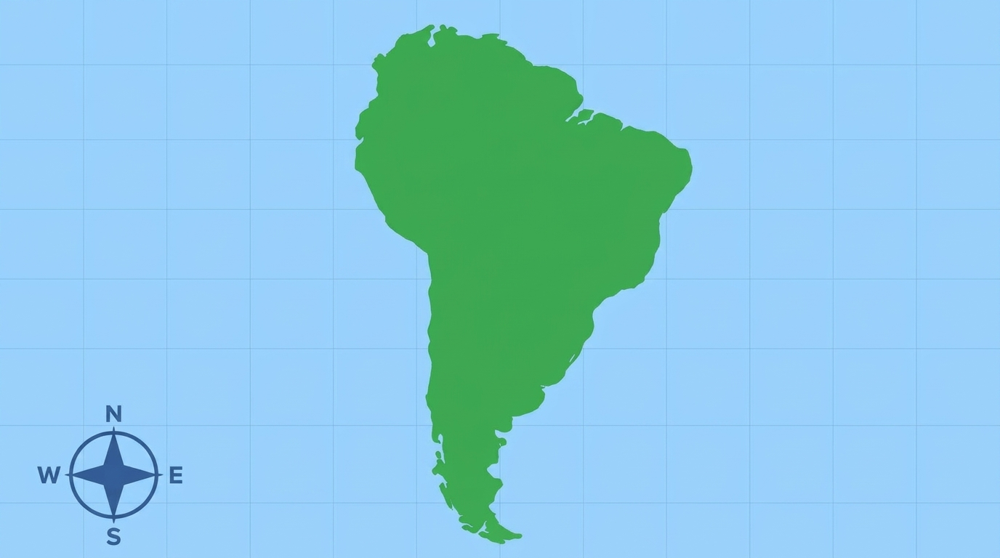

Pin and Explore
Discovering the Famous Historical Sites Across Different Countries
Home
About
Contact
Explore the map
← Back to world map
South America
Select a country pin to explore its landmarks.

Peru
Select a country pin to explore